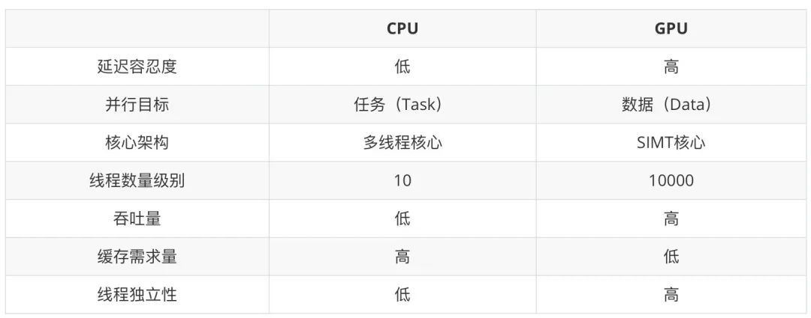
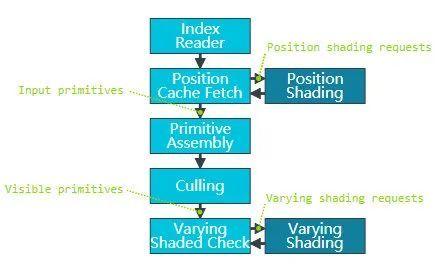

GPU渲染管线和硬件架构浅谈
作者：landonwang，腾讯 IEG 客户端开发工程师
本文简述了 GPU 的渲染管线和硬件架构，对一些常见问题进行了讨论和分析。特此分享出来，与君共勉。当然，由于本人并未从事过硬件开发的工作，文中有错漏之处在所难免，欢迎批评指正。另外本文内容量很大，总结下来有以下几点核心内容：（1）移动平台渲染管线 TBDR 的介绍; （2）GPU 缓存体系的介绍；（3）Warp 的执行机制；（4）常见的如 AlphaTest 或者分支对性能的影响。
序言
- 联发科的工程师团队在对我们游戏进行了性能分析之后，建议我们将草地的 PreZ 移除掉试试，或许可以提高游戏性能。这与我们的传统认知有出入。但是印象中，确实有某些机器开不开 PreZ 差别不大。这个矛盾点促使我们对 PreZ 做了进一步的研究和测试。
- 在测试过程中我发现，如果对 GPU 的渲染管线不够了解的话，很有可能连测试用例都是错误的。所以后面又花了大量时间查阅了 GPU 硬件架构的资料。过去一些模糊的概念也变得清晰起来。
一、GPU 渲染管线
1.1 渲染管线简述
所谓渲染管线，就是 CPU 传送给 GPU 一堆数据（顶点、纹理等），经过一系列处理，最后渲染得出来一副二维图像。有以下几个阶段。
1.1.1 应用程序阶段
- 粗粒度剔除、渲染状态设置、准备数据。
- 我们在游戏引擎中所做的视锥剔除、遮挡剔除等，都是粗粒度剔除，是基于模型级别的。
- 这一步是在 CPU 进行的，后面的步骤都是在 GPU 内部进行的。
1.1.2 顶点处理阶段
- 顶点着色器、曲面细分、几何着色器、顶点裁剪、屏幕映射。
- 这里会做背面剔除等裁剪，确保只有真正需要绘制的图元才会进入光栅化。
- 顶点处理是可编程的（Vertex Shader，Geometry Shader 和 Compute Shader）。
1.1.3 光栅化阶段
- 三角形设置、三角形遍历、片元着色器。
- 光栅化引擎会将图元(Primitive)映射为与屏幕像素对应的片元(Fragment)。片元包含每个像素的坐标、颜色、深度、法线、导数、纹理坐标等信息。这个数据经过片元着色器的计算得到最终的颜色值。
- 像素处理是可编程的（OpenGL 中叫做片元着色器，Fragment Shader，DirectX 中叫做像素着色器，Pixel Shader）。这里通常是性能瓶颈所在，所以现代 GPU 做了很多的优化来尽可能避免执行无效的像素处理，比如 EarlyZ、隐面剔除等。
1.1.4 逐片元操作
- 裁剪测试、深度测试、模板测试、混合。
- 光栅化阶段得到的颜色值通过一些列的测试、混合，最终写入到 FrameBuffer 中。
- ROP (Raster Operations)，是由一个独立的硬件单元来完成的。这个硬件单元的数量和性能限制了 GPU 每秒写入 FrameBuffer 的数据量。在一些低端机这个阶段也非常有可能成为性能瓶颈，即每秒 ROP 处理数据量。即便使用最简单的全屏半透明 shader，多叠加一两层就会因 overdraw 而严重降帧，很有可能就是 ROP 瓶颈。
1.2 IMR: Immediate Mode Rendering
上图展示了一个非常经典的 IMR 渲染管线，也是桌面端最常见的 GPU 架构。GPU 会在每个 drawcall 提交中，按照管线的顺序处理每个图元。
1.2.1 优势：
- 其优势是渲染管线没有中断，有利于提高 GPU 的最大吞吐量，最大化的利用 GPU 性能。同时从 vertex 到 raster 的处理都是在 GPU 内部的 on-chip buffer 上进行的，这意味着只需要很少的带宽(bandwidth)，就可以存取(storing and retrieving)处理过程中的图元数据。
- 所以桌面 GPU 天然就可以处理大量的 DrawCall 和海量的顶点。而移动端 GPU 则对这两者异常敏感。这不仅仅是 GPU 性能差异，架构差异也至关重要。
1.2.2 劣势：
- IMR 是全屏绘制的。当前绘制的图元可能存在于屏幕的任何位置。这意味着我们需要一个全屏的 FrameBuffer。这个 buffer 的内存很大（比如 30MB，大小跟屏幕分辨率和渲染目标的格式有关），所以只能放在系统内存(DRAM)中。而在光栅化之后的 fragment shading, depth testing, stencil testing, blending 等阶段，都会大量的与系统内存进行交互，消耗大量的带宽。GPU 的 L1/L2 缓存可以缓解这个问题，但是对于移动端，依然是不可接受的开销。
1.3 TBR: Tile-based Rendering
1.3.1 为什么要使用 TBR 架构
- 对移动端设备而言，控制功耗是非常重要的。功耗高意味着耗电、发热、降频，这会导致我们的游戏出现严重的卡顿或者帧率降低。带宽是功耗的第一杀手，大量的带宽开销会带来明显的耗电和发热。
- 移动端 GPU 的带宽本来就跟桌面端 GPU 不是一个量级，又无法像独立显卡一样独占大量带宽，所以减少带宽开销变得异常重要。因此移动端 GPU 普遍使用的是 TBR/TBDR 架构。
1.3.2 TBR 架构的原理
- TBR 跟 IMR 不同之处在于，它并不是基于全屏直接绘制。而是把屏幕分成一个一个的 Tile，GPU 一次只绘制一个 Tile。绘制完毕再将绘制结果写入到系统内存的 FrameBuffer 中。
- TBR 架构的绘制过程分成两个部分
- 第一步，处理所有顶点，生成一个 tile list 的中间数据（FrameData）。这个数据保存了每个图元归属于哪个屏幕上的 Tile。PowerVR 一个 Tile 是 32x32 大小，而 Mali 则是 16x16 大小（即将发布的 Mali-G710 也修改为 32x32 大小了）。
- 第二步，针对每个 Tile 执行像素处理过程（光栅化、片元着色器等），每个 Tile 处理完毕，将结果一起写入到系统内存中。
1.3.3 优势
- TBR 架构最大的优势就是减少了对主存的访问，也即减少了带宽开销。每个 Tile 足够小，其 framebuffer 是可以做到 on-chip memory 上的。on-chip memory 紧挨着 GPU 的 shader core，访问速度极快。
- 不仅仅是 fragment shader，depth testing、blending 等操作也是在 on-chip memory 进行的。大幅减少像素处理阶段对系统内存的访问。
- 还有一个明显优势是，depth buffer 和 stencil buffer 只在 Tile 处理内部有用。它们是不需要写回系统内存的，这进一步节省了带宽开销。
- TBR 架构里，一些原本非常昂贵的，消耗大量的带宽的算法，会变得高效起来。比如 MSAA (Multi-Sample Anti-Aliasing)。
1.3.4 劣势
- GPU 要处理所有的顶点，生成 tile list，然后才可以进行光栅化。跟 IMR 相比，这里会有明显的“延迟(latency)”。
- 生成的这个 tile list 数据是要存到系统内存中的。这同样会有带宽开销。顶点越多，计算的压力就越大，带宽消耗也会越多。像曲面细分(tessellation)，在 TBR 架构下就异常的昂贵。
- 所以移动端游戏对顶点数量更加敏感。如果顶点数量过大的话，会导致性能严重下降。
1.4 TBDR: Tile-Based Deferred Rendering
- TBDR 和 TBR 模式基本类似，唯一的区别在于，多了一个 隐面剔除(Hidden Surface Removal) 的过程。就是上图中 HSR & Depth Test 这个步骤。通过 HSR，无论以什么顺序提交 drawcall，最终只有对屏幕产生贡献的像素会执行像素着色器。被遮挡的片元会被直接丢弃掉。
- 不同的 GPU 有自己的隐面剔除技术，比如 PowerVR 就是 Hidden Surface Removal (HSR)，Adreno 就是 Low Resolution Z (LRZ)，Mali 就是 Forward Pixel Kill (FPK)。其原理和实现各不相同，不过最终目的都是为避免执行无效的像素着色器。
1.5 总结
- IMR 是桌面端 GPU 的主流架构。NVIDIA 较新的显卡也部分支持了 Tile based 的特性。不过这个 Tile 是较大的 Tile，而不是像 Mali 芯片这样 16x16 的小 Tile。
- TBR 是移动端 GPU 的主流架构，通过拆分成一个个 Tile 绘制，减少与主存的交互，进而减少带宽开销。
- TBDR 一开始专指 PowerVR，其光栅化之后并不是立即渲染，而是多了隐面剔除的过程。后来 Adreno 和 Mali 也分别提出了自己的隐面剔除方案。所以认为现在的移动端 GPU 都是 TBDR 架构也不为过。
- 推荐阅读 GPU Framebuffer Memory: Understanding Tiling 这篇文章，更加直观的了解不同架构的绘制过程。
二、GPU 硬件架构
2.1 GPU 和 CPU 的差异
这张图展示了 CPU 和 GPU 的硬件差异。
- CPU 核心数量少（计算单元少），每个核心都有控制单元。内存设计上是大缓存、低延迟。
- 而 GPU 则恰好相反，计算单元非常多，多个计算单元共享一个控制单元。内存设计上追求高带宽，可以接受较高延迟。
- 所以 CPU 中习以为常的分支控制，逻辑运算，在 GPU 中成了奢侈品。而面对海量数据并发计算的场景，GPU 则比 CPU 快好几个数量级。
CPU 和 GPU 的差异可以描述在下面表格中：

2.2 CPU 的缓存体系和指令执行过程
虽然本文主要讲的是 GPU 架构，不过 CPU 和 GPU 有很多地方是相通的，同时又有一些设计方向是相反的。了解 CPU 可以帮助我们更好的理解 GPU 的执行过程。
2.2.1 内存的硬件类型
- SRAM（Static Random Access Memory，静态随机存取内存）具有静止存取数据的作用，但是断电后数据会消失，不需要刷新电路就能够保存数据，速度较 DRAM 快很多。一般用作片内缓存（On-chip Cache），例如 L1 Cache、L2 Cache。
- DRAM（Dynamic Random Access Memory，动态随机存取内存）需要不停地刷新电路，否则内部的数据将会消失，因此被称为“动态”存储器。常用于内存，容量较 SRAM 大。一般用作系统内存（System Memory）。现在桌面端的内存都是 DDR （DDR SDRAM，Double Data Rate Synchronous Dynamic Random-Access Memory，简称 DDR）。
- GDDR（Graphic DDR），用作显存。时钟频率更高，耗电量更少。早期显存也是使用 DDR 的，不过后面独立发展为 GDDR。DDR 现在还处于 DDR4 标准，而 GDDR 已经发展到 GDDR6 了。
- LPDDR SDRAM，简称 LPDDR（Low Power Double Data Rate）。是移动设备常用的一种低功耗 SDRAM，以低功耗和小体积著称。FrameBuffer 便存放于此。芯片参数中说的 LPDDR4/LPDDR5，说的便是这个，代表了系统内存的性能。
- UFS（Universal Flash Storage）。通用闪存存储，如 ufs2.1/ufs3.1 等。代表了移动设备“磁盘”的性能。
2.2.2 CPU 的缓存体系
- CPU 的缓存有 L1/L2/L3 三级缓存。L1 缓存和 L2 缓存是在 CPU 核心内部的（每个核心都配有独立的 L1/L2 缓存），L3 缓存是所有核心共享的。缓存是 SRAM，速度比系统内存（DRAM）要快非常多。
- L1/L2 缓存是片上缓存，速度很快，但是通常比较小。比如 L1 cache 通常在 32KB~256KB 这个级别。而 L3 cache 可以达到 8MB~32MB 这个级别。像苹果的 M1 芯片（CPU 和 GPU 等单元在一个硬件上，SoC），L3 缓存是给所有硬件单元使用的，所以也被称为 System Level Cache。
- L1 缓存分为指令缓存（I-Cache）和数据缓存（D-Cache），CPU 针对指令和数据有不同的缓存策略。
- L1 缓存不可能设计的很大。因为增大 L1 缓存虽然会减少 L1 cache missing，但是会增加访问的时钟周期，也就是说降低了 L1 cache 的性能。
- CPU 的 L1/L2 缓存需要处理缓存一致性问题。即不同核心之间的 L1 缓存之间的数据应该是一致的。当一个核心的 L1 中的数据发生变化，其他核心的 L1 中的相应数据需要标记无效。而 GPU 的缓存不需要处理这个问题。
- CPU 查找数据的时候按照 L1–>L2–>L3–>DRAM 的顺序进行。当数据不在缓存中时，需要从主存中加载，就会有很大的延迟。
- 缓存对提高 CPU 的执行性能有着非常重要的意义。如上面的 Intel i7 die shot 所示，很多时候缓存会占据芯片中一半以上的晶体管和面积。苹果的 A14/A15/M1 芯片性能上碾压同档次的其他 SoC，跟超大缓存密不可分，其 L2/L3 缓存一般是其他 SoC 的两三倍。
2.2.3 CPU 指令的执行过程
- 经典的指令流水线有下面五个阶段
- Instruction Fetch，取指令。从指令缓存（I-Cache）中取出指令，放在指令寄存器中。
- Instruction Decode，指令解码。这里还会通过寄存器文件（Register File）取到指令的源操作数。
- Execute，执行指令。
- Memory Access，如果需要存储器取数据（load/store 指令），则通过数据缓存（D-Cache）取数据。不访问存储器的指令此阶段不做任何事情。
- Register Write Back，将指令执行结果写入目的寄存器。
- 访问主存，无论是 GPU 还是 CPU 都会出现较大的延迟。面对延迟，CPU 和 GPU 的解决方案不一样。CPU 是通过大容量高速缓存，分支预测，乱序执行（Out-of-Order）等手段来遮掩延迟。CPU 缓存容量比 GPU 要大，比如 GPU 就没有 L3 缓存。而且 CPU 的缓存是以低延迟为目标设计的。GPU 是另外一种思路，通过切换线程 Warp 来规避指令延迟带来处理单元的停顿，下文介绍 GPU 的 Warp 机制的时候还会提到这一点。
- 如果出现分支，CPU 是通过分支预测，来提高流水线的执行性能。现代 CPU 的分支预测准确率很高，可以达到 90%以上。当然一些糟糕的代码影响了分支预测，就会出现性能问题。GPU 没有分支预测单元，所以并不擅长执行分支。
- CPU 可以同时发射多条指令，让指令能够并行计算，而不是一条流水线串行计算，这样可以更好的利用计算单元。这个就是超标量设计（Super Scalar）。现代 CPU 基本都是超标量的。
- 如果按照原本的指令顺序执行，可能指令之间有依赖无法并行执行，或者频繁出现高延迟指令。所以 CPU 会在保证执行结果正确性的基础上，修改指令的执行顺序，让指令能够更加高效的执行，从而减少执行等待，提升管线性能。这个就是乱序执行。
- CPU 的线程切换会有明显的上下文（Context）切换开销。因为切换到其他线程需要将寄存器和程序计数器保存起来，等切换回来的时候还需要恢复寄存器和程序计数器。所以 CPU 会尽可能避免频繁的线程切换。而 GPU 因为寄存器数量很多，线程切换时不需要保存上下文，所以就可以通过零成本的切换线程来遮掩延迟。
- Intel CPU 也有使用 GPU 的思路，准备两套寄存器，CPU 核心在两个线程之间切换的成本就非常低。这样一个核心就可以当做两个核心来使用。这就是超线程技术。不过 CPU 毕竟不像 GPU 有大量寄存器，核心在两个线程之间切换，并不一定能够保证降低延迟，同时不能准确控制每个线程的执行时间。所以很多游戏以及高性能计算程序都是关闭超线程的。
2.3 GPU 渲染过程
具体渲染过程，其实就是经典的渲染管线的执行过程。可以跟上一部分的渲染管线流程图对照阅读。推荐阅读 Life of a triangle - NVIDIA's logical pipeline 一文。
- 应用程序通过图形 API（DirectX、OpenGL、Vulkan、Metal）发出渲染命令，通过驱动传输数据给 GPU。GPU 通过主机接口（Host Interface）接受这些命令，并通过前端（Front End）处理这些命令。
- SM (Streaming Multiprocessor) 负责处理执行顶点着色器。现代 GPU 都是统一着色器架构（Unified Shader Architecture），顶点着色器和像素着色器使用相同的处理核心执行。这样 GPU 可以更好的做负载均衡，以适应顶点任务重或者像素任务重的不同工作情景。
- 处理过的三角形会被裁剪，然后分配给光栅化引擎。在光栅化阶段，会把三角形离散为与屏幕对应的栅格信息。
- 光栅化后的片元，经过 EarlyZ 剔除，生成像素线程。32 个线程为一个线程束(Warp)。这是 GPU 计算核心的最小工作单元。
- 接下来是在 SM 中执行像素着色器。一个 Warp 中执行的指令是一样的，但是数据不一样（SIMD/SIMT）。
- 执行完像素着色器之后，数据会交给 ROP (Raster Operations)。因为像素着色器执行有快有慢，所以这里会有排序过程，保证执行 ROP 的顺序和原始 API 的调用顺序是一致的。一个 ROP 内部有很多 ROP 单元，在 ROP 单元中处理深度测试，和 Framebuffer 的混合。深度测试和颜色写入必须是原子操作，否则两个不同的三角形在同一个像素点就有可能会有冲突和错误。
2.4 桌面端 GPU 硬件架构
上图展示的是 NVIDIA Fermi 架构的示意图。不同的 GPU，架构差异较大，但是大体都包含下列核心组件：
- SM、SMX、SMM (Streaming Multiprocessor)。GPU 的核心，执行 Shader 指令的地方。一个 GPU 由多个 SM 构成。Mali 中类似的单元叫做 Shader Core，PowerVR 中叫做 Unified Shading Cluster (USC)。
- Core。真正执行指令的地方。NVIDIA 叫做 CUDA Core。Mali 中叫做 Execution Engine 或者 Execution Core。PowerVR 中叫做 Pipeline。当然由于硬件结构差异，Execution Engine、Pipeline 和 CUDA Core 并不等价。后面还会对此再做分析。
- Raster Engine。光栅化引擎。
- ROP (Raster Operations)。depth testing, blending 等操作都是在这里完成的。
- Register File, L1 Cache, L2 Cache。寄存器和各级缓存。
2.5 Shader Core 的主要构成单元
- 32 个运算核心 （CUDA Core，也叫流处理器 Stream Processor）
- 16 个 LD/ST（Load/Store）模块来加载和存储数据
- 4 个 SFU（Special function units）执行特殊数学运算（sin、cos、log 等）
- 128KB 寄存器（Register File）3 万个 32-bit 的寄存器，大寄存器设计
- 64KB L1 缓存 （On-Chip memory）
- 纹理读取单元 （Texture Unit）
- 指令缓存（Instruction Cache）
- Warp Schedulers：这个模块负责 warp 调度，一个 warp 由 32 个线程组成，warp 调度器的指令通过 Dispatch Unit 送到 Core 执行。
2.6 GPU 的内存结构
2.6.1 UMA （Unified Memory Architeture）
- 这张图展示了桌面端和移动端的内存结构差异。桌面端独立显卡是左边的分离式架构，CPU 和 GPU 使用独立的物理内存。而移动端是右侧的统一内存架构，CPU 和 GPU 共用一个物理内存。桌面端的集成显卡也是 UMA 架构。
- UMA 并不是说 CPU 和 GPU 的内存就在一起了，实际上它们所使用的内存区域并不一样。物理内存中有一块儿专有区域由 GPU 自己管理。CPU 到 GPU 的数据通信依然是有拷贝过程的。如果狭义上说，像主机平台或者苹果 M1 芯片这样可以实现 CPU 和 GPU 的零拷贝数据传输的架构才是真正的 UMA，移动端这种架构只能算是共享物理内存。
- 移动芯片都是 SoC（System on Chip），CPU 和 GPU 等元件都在一个芯片上，芯片面积（die size）寸土寸金。自然不可能像桌面端一样给显卡配备 GDDR 显存，通过独立的北桥（PCI-e）进行通信。在移动端 CPU 和 GPU 使用同一个物理内存也更加灵活一些，操作系统可以决定分配给 GPU 的显存大小。当然副作用就是 CPU 和 GPU 很多时候会抢占带宽，这会进一步限制 GPU 能使用的带宽。
- GPU 使用独立的显存空间的好处是，GPU 可以对 Buffer 或者 Texture 做进一步优化，比如对 GPU 更加友好的内存排布。显存中存储的数据可能并不是我们实际 Upload 的数据。所以即便在手机上，CPU 和 GPU 共用的是一块儿物理内存，我们依然需要通过 MapBuffer 的形式来完成数据的拷贝。反过来说，如果 CPU 和 GPU 直接使用相同的数据，那么 GPU 就无法对数据做优化，可能会降低性能。
- CUDA 后面有推出统一虚拟地址（Unified Virtual Address，UVA）和统一内存（Unified Memory，UM）的技术，将内存和显存的虚拟地址统一。不过这个跟物理内存是合并的还是分离的没有关系。其目的是为了减化开发者写 CUDA 程序的内存管理的负担。
2.6.2 GPU 缓存的分类
GPU 缓存结构
- L1 缓存是片上缓存（On-Chip），每个 Shader 核心都有独立的 L1 缓存，访问速度很快。移动 GPU 还会有 TileMemory，也就是片上内存（On-Chip Memory）。
- L2 缓存是所有的 Shader 核心共享的。属于片外缓存，离 Shader 核心略远，所以访问速度较 L1 缓存要慢。
- DRAM 是主存（系统内存，可以叫做 System Memory，Global Memory 或 Device Memory），访问速度是最慢的。FrameBuffer 是放在主存上的。
内存访问速度
内存的存取速度从寄存器到系统内存依次变慢：
| 存储类型 | Register | Shared Memory | L1 Cache | L2 Cache | Texture/Const Memory | System Memory |
|---|---|---|---|---|---|---|
| 访问周期 | 1 | 1~32 | 1~32 | 32~64 | 400~600 | 400~600 |
- 寄存器访问速度是最快的，GPU 的寄存器数量很多。
- Shared Memory 和 L1 Cache 是同一个硬件单元，Shared Memory 是可以由开发者控制的片上内存，而 L1 缓存是 GPU 控制的，开发者无法访问。部分移动芯片如 Mali，是没有 Shared Memory 的，这个主要影响 OpenCL 开发。
- Local Memory 和 Texture/Const Memory 都是主存上的一块儿内存区域，所以访问速度很慢。
NVIDIA 的内存分类
查资料的时候经常会看到这些概念，但是 NVIDIA 的内存分类是为 CUDA 开发服务的，与游戏开发或者移动 GPU 还是有一些差异的。所以这里只需要简单了解即可。
- 全局内存（Global memory）。主存，Device Memory。
- 本地内存（Local memory）。Local Memory 是 Global Memory 中的一部分。是每个线程私有的。主要用于处理寄存器溢出（Register spilling，寄存器不够用了），或者超大的 uniform 数组。访问速度很慢。
- 共享内存（Shared memory）。Shared Memory 是片上内存，访问速度很快。是一个 Shader 核心内的所有线程共享的。
- 寄存器内存（Register memory）。访问速度最快。
- 常量内存（Constant memory）。Constant Memory 和 Local Memory 类似，都是 Global Memory 中的一块儿区域，所以访问速度很慢。部分 GPU 会有专门的 Constant cache。
- 纹理内存（Texture memory）。与 Constant Memory 类似，也在主存上。部分 GPU 有 Texture cache。
2.6.3 Cache line
- GPU 和缓存之间的内存交换是以字节为单位，而是以 Cache line 为单位的。Cache line 是固定的大小，比如 CPU 的 Cache line 是 64 字节，GPU 是 128 字节。
- Cache line 不仅仅是为了字节对齐。也有现实意义。想要知道是否缓存命中，是否写入主存，肯定要有标记位。所以一个 Cache line 就是标记位+地址偏移+实际数据。
- 缓存命中与否性能差异巨大。对一块儿内存进行顺序访问比随机访问，性能可能要好很多。我们纹理使用 Mipmap 可以是提高纹理的缓存命中率进而提升性能。Unity 的 ECS 系统也是期望通过 Cache 友好的数据布局来提升性能。
2.6.4 Memory Bank 和 Bank Conflict
- 为了提高对内存的访问性能，获得更高带宽，Shared Memory/L1 Cache 被设计为一个个的 Memory Bank（L2 cache 可能也有类似设计）。bank 数量一般与 warp 大小或者 CUDA core 数量对应，例如 32 个 core 就把 SMEM 划分为 32 个 bank，每个 bank 包含多个 cache line。Bank 可以理解为 Memory 的对外窗口，有 10 个窗口可以访问，肯定要比只有 1 个窗口要高效。
- 如果同一个 warp 中的不同线程，访问的是不同的 bank，那么就可以并行执行，最大化利用带宽，性能最高。
- 如果访问的是一个 bank 中的同一个 cache line，那么可以通过广播机制同步到其他线程。一次访问即可取得数据，也不会有性能问题。
- 如果访问的是同一个 bank 中的不同的 cache line，那么就必须阻塞等待，串行访问。这个会严重阻碍 GPU 的并行性，产生明显的性能下降。这个阻塞等待的情况，被称为Bank Conflict。
- 如果不同的线程，对同一个 cacheline 有写操作，那么也必须要阻塞等待。必须等上一个线程写完毕，才能执行后面的读取或者写入操作。
2.7 GPU 的运算系统
2.7.1 SIMD (Single Instruction Multiple Data) 和 SIMT (Single Instruction Multiple Thread)
- 在游戏引擎内，我们常会使用 SSE 加速计算（比如视锥体裁剪的计算）。这里利用的就是 SIMD，单个指令计算多个数据。
- 而 GPU 的设计是为了满足大规模并行的计算（其处理的任务就是天然并行的）。因此 GPU 是典型的 SIMD/SIMT 执行模式。在其内部，若干相同运算的输入会被打包成一组并行执行。
- 在介绍 SIMT 之前，我们需要先介绍下Vector processor和Scalar processor的概念。早期 GPU 是Vector processor（对应 SIMD）。因为早期 GPU 处理的都是颜色值，就是 rgba 四个分量。在此架构下，编译器会尽可能把数据打包成 vec4 来进行计算。但是随着图形渲染以及 GPGPU 的发展，计算变得越来越复杂，数据并不一定能够打包成 vec4，这就可能会导致性能的浪费。所以现代 GPU 都改进为Scalar processor（对应 SIMT）。后面介绍 Mali 的架构演进的时候还会提到这一点。
- 现代 GPU 都是 SIMT 的执行架构。传统 SIMD 是一个线程调用向量处理单元(Vector ALU)操作向量寄存器完成运算，而 SIMT 往往由一组标量处理单元(Scalar ALU)构成，每个处理单元对应一个像素线程。所有 ALU 共享控制单元，比如取指令/译码模块。它们接收同一指令共同完成运算，每个线程，可以有自己的寄存器，独立的内存访问寻址以及执行分支。
- 传统的 SIMD 是数据级并行，**DLP (Data Level Parallelism)。而 SIMT 是线程级并行，TLP (Thread Level Parallelism)。更进一步的超标量（Super Scalar）**是指令级并行，ILP (Instruction Level Parallelism)。
- Mali 的 Midgard 是 VLIM（超长指令字，Very long instruction word）设计。它可以通过 128bit-wide 的计算单元并行计算 4 个 FP32 或者 8 个 FP16 等类型的数据。编译器和 GPU 会合并指令以充分利用处理器资源。这也是一种指令级并行（ILP）。
- PowerVR、Adreno 的 GPU，以及 Mali 最新的 Valhall 架构的 GPU 都支持Super Scalar。可以同时发射多个指令，由空闲的 ALU 执行。也就是说，同一个 Pipeline 内的多个 ALU 元件是可以并行执行指令序列中的指令的。
- 无论使用哪种架构，GPU 的计算单元都是并行处理大量数据，所以有的文章也会直接把 GPU 的计算单元称作 SIMD 引擎，或者简称为 SIMD。
- 如上图所示，左侧是 Vector 处理器，而右侧是 Scalar 处理器。对于 Vector 处理器而言，它是在一个 cycle 内计算(x,y,z)三个值，如果没有填满的话，就会产生浪费。如果是 Scalar 处理器，它是在 3 个时钟周期内分别计算(x,y,z)三个值，不过它可以 4 个线程同时计算，这样就不会浪费处理器性能。
- 合并单个计算为向量计算，在 Scalar processor 上没有优化效果。因为处理器计算的时候还是会把向量拆散。之前是一个 vec4 在一个 cycle 内完成计算。现在是一个 vec4 在 4 个 cycle 内完成计算，每个 cycle 计算一个单位。如果是 vec3 的话，就是 3 个 cycle。
2.7.2 Warp 线程束
- Warp 是典型的单指令多线程（SIMT）的实现。32 个线程为一组线程束(Warp)。这 32 个线程同时执行一样的指令，只是线程数据不一样，这就是锁步（lock step）执行。这样的好处就是一个 Warp 只需要一个套控制单元对指令进行解码和执行就可以了，芯片可以做的更小更快。Mali 早期的 GPU 并不是基于 warp 的，性能表现不佳。因为每个核心都有控制单元，占用了过多的晶体管，产生了很多的 overhead，进而导致功耗的增加。
- Warp Scheduler 会将数据存入寄存器，然后将着色器代码存入指令缓存，并要求指令分派单元（DispatchUnit）从指令缓存中读取指令分派给计算核心（ALU）执行。
- Warp 中的所有线程执行的是相同的指令，如果遇到分支，那么就可能会出现线程不激活执行的情况（例如当前的指令是 true 的分支，但是当前线程数据的条件是 false），此时线程会被遮掩(masked out)，其执行结果会被丢弃掉。shader 中的分支会显著增加时间消耗，在一个 warp 中的分支除非 32 个线程都走到 if 或者 else 里面，否则相当于所有的分支都走了一遍。
- 线程不能独立执行指令而是以 warp 为单位，而这些 warp 之间才是独立的。warp 是 GPU 执行的最小单位。如果一个 shader 对应的像素数量填不满 32 个线程，它也会占用一个 warp 来执行。这种是明显 warp 利用率低的情况，部分核心在工作，部分核心在陪跑。
- 一个 Warp 中的像素线程可以来自不同的图元。只不过其 shader 指令是一致的。
- Warp 中的线程数量和 SM 中的 CUDA core 数量并不一定是一致的。完全可以 Warp 为 32，但是 CUDA core 只有 16 个。这种情况下，每个 core，两个 cycle 完成一个 warp 的计算就行了。PowerVR 就是类似的设计。
2.7.3 Stall 和 Latency Hiding (延迟隐藏)
- 指令从开始到结束消耗的 clock cycle 称为指令的 latency。延迟通常是由对主存的访问产生的。比如纹理采样、读取顶点数据、读取 Varying 等。像纹理采样，如果 cache missing 的情况下可能需要消耗几百个时钟周期。
- CPU 通过分支预测、乱序执行、大容量缓存等技术来隐藏延迟。而 GPU 则是通过 warp 切换来隐藏延迟。
- 对 CPU 而言，上线文切换是一个有明显开销的行为。所以 CPU 是尽可能避免频繁的线程切换的。而 GPU 在 Warp 之间切换几乎是无开销的，所以当一个 Warp stall 了，GPU 就切换到下一个 Warp。等之前的 Warp 获得需要的数据了，再切换回来继续执行。
- 之所以能够实现这个机制，得益于 GPU 的大寄存器设计。GPU 中的寄存器数量远超 CPU。比如前文提到的费米架构的 GPU，每个 SM 的寄存器是 3 万个。而每个线程能够使用的最大寄存器数量限制在 255。所以即便每个线程都占满寄存器，也只消耗了总寄存器数量的四分之一。
- 每个 SM 会被同时分配多个 warp 来执行，warp 一旦进入 SM 内就不会再离开，直到执行完毕。每个线程会在一开始就分配好所需的寄存器和 Local Memory。当一个 Warp 产生了 Stall，GPU 的 Core 会直接切换到另外的 warp 来执行。因为不需要保存和恢复寄存器状态，所以这个切换几乎没有成本，可以在一个 cycle 内完成。
- SM 中 warp 调度器每个 cycle 会挑选 Active warp 送去执行，一个被选中的 warp 称为 Selected warp。没被选中，但是已经做好准备被执行的称为 Eligible warp，没准备好要执行的称为 Stalled warp。warp 适合执行需要满足两个条件：32 个 CUDA core 有空以及所有当前指令的参数都准备就绪。
- 如果 Shader 里面使用的变量越多（Shader 写的很长），占用的寄存器数量就越多，留给 Warp 切换的寄存器就会变少。分配给 SM 的 Warp 数量就减少了，也就是 Active warp 降低了。这会降低 GPU 隐藏延迟的能力，会降低 GPU 的利用率。
- 关于 GPU 的执行过程，知乎上洛城的这篇回答非常有趣，生动形象的展示了 GPU 的硬件构成和常见概念。如果对其还不了解的同学，强烈推荐阅读。
2.7.4 Warp Divergence
- 由于 Warp 是锁步执行的，Warp 中的 32 个线程执行的是同样的指令。当我们的 shader 中有 if-else 的时候，如果 Warp 内有的线程需要走 if 分支，有的线程需要走 else 分支，就会出现Warp divergence。GPU 对此的处理方式是，两个分支都走一遍，通过 Mask 遮蔽掉不要的结果。
- 如果 Warp 内所有线程都走的是分支的一侧，则没有太大影响。所以动态分支就相当于两条分支都走一遍，对性能影响较大，而静态分支则还好。当然，实际情况可能还会更加复杂一些，后面会再详细讨论。
2.8 其他重要概念
2.8.1 Pixel quad
- 光栅化阶段，栅格离散化的粒度虽然最终是像素级，但是离散化模块输出的单位却不是单个像素，而是 Pixel Quad（2x2 像素）。其中原因可能是单个像素无法计算 ddx、ddy，从而在 PS 当中判断选用贴图的 mipmap 层级会发生困难。进行 EarlyZ 判定的最小单位也是 Pixel Quad。
- 如上图所示，可以看出像素点网格被划分成了 2X2 的组，这样的组就是 Quad。一个三角形，即使只覆盖了一个 Quad 中的一个像素，整个 Quad 中的四个像素都需要执行像素着色器。Quad 中未被覆盖的像素被称为"辅助像素”。比较小的三角形在渲染时，辅助像素的比例会更高，从而造成性能浪费。
- 请注意，辅助像素其实依然在管线内参与整个 PS 计算，只不过计算结果被丢弃而已。而又因为 GPU 和内存之间有 cache line 的存在，cache line 一次交换的数据大小是固定的，所以这些被丢弃的像素很多时候也不会节省带宽。他们会原样读入原样写出，带宽消耗还是那么多。所以，尽可能避免大量小图元的绘制，可以更有效的利用 Warp。
2.8.2 EarlyZS
- Depth test 和 Stencil test 是一个硬件单元（ROP 中的硬件单元）。Early depth test 的阶段同样是可以做 Early stencil test 的。所以很多文档会描述这个阶段为 Early ZS。Early-Z 技术可以将很多无效的像素提前剔除，避免它们进入耗时严重的像素着色器。Early-Z 剔除的最小单位不是 1 像素，而是像素块（Pixel Quad）。
- 传统的渲染管线中，depth test 在像素着色器之后进行。进行深度测试，发现自己被遮挡了，然后丢弃掉。这显然会出现大量的无用计算，因为 overdraw 是不可避免的。因此现代 GPU 中运用了 Early-Z 的技术，在像素着色器执行之前，先进行一次深度测试，如果深度测试失败，就不必进行像素着色器的计算了，因此在性能上会有很大的提升。
- AlphaTest 会影响 EarlyZ 的执行。一方面是自身不能执行 EarlyZ write 操作，因为只有当像素着色器执行完毕之后才知道自己要不要丢弃，如果提前写入深度会有错误的执行结果。另外一方面只有当自己执行完像素着色器，写入深度之后，相同位置的后续片元才能继续执行，否则就必须阻塞等待其返回结果，这会阻塞管线。关于这一点后面还会再做详细分析。
- 其他如在像素着色器里面修改深度，或者使用 Alpha to coverage 等，也会影响 EarlyZ 的执行。
2.8.3 Hierarchical-z 和 Tile-based Rasteration
这两个是硬件提供的优化。
- Hierarchical Z-culling，也称为 Z-cull。是 NVIDIA 硬件支持的粗粒度的裁剪方案。有点像 Adreno 的 LRZ 技术，通过低分辨率的 Z-buffer 来做剔除。不过它只精确到 8x8 的像素块，而非像 LRZ 一样可以精确到 Quad（2x2）。移动平台 GPU 有其他技术做裁剪剔除，所以猜想是没有使用这个技术的。另外，不要把它和 EarlyZ 弄混，也不要把它和我们引擎实现的 Hi-Z GPU Occlusion Culling 弄混。
- Tile-based Rasteration 技术。光栅化也是可以 Tile-based，这同样是硬件厂商的优化技术。光栅化阶段通常不会成为性能瓶颈。不过游戏性能优化杂谈中介绍了一个有趣的案例，原神中对树叶使用 Stencil，期望通过抠图实现半透明效果来提高性能。但是却因为影响了 Tile-based Rasteration 的优化，反而导致性能下降。在 PC 平台原本会有一些优化习惯，比如通过 discard 或者其他手段剔除掉像素，避免其进入到像素着色器（减少计算）或者 ROP（减少访问主存）阶段，以此来提高性能。不过这些习惯在移动平台通常都是负优化。
- 大量小三角形绘制是 GPU 非常不擅长的工作情景。GPU 对顶点着色器和光栅化的优化手段有限，又因为光栅化的输出是 PixelQuad，那么大量像素级的小三角形就必然会导致 warp 中的有效像素大大减少。所以 UE5 的 Nanite 会使用 ComputeShader 自己实现软光栅，来替代硬件光栅化处理这些像素级的小三角形，以此获得几倍的性能提升。相关细节可以参考UE5 渲染技术简介这篇文章。
2.8.4 Register Spilling 和 Active Warp
- GPU 核心的寄存器虽然很多，但是数量还是有限的。GPU 核心执行一个 Warp 的时候，会在一开始就把寄存器分配给每条线程。如果 Shader 占用的寄存器过多，那么能够分配到 GPU 核心来执行的 Warp 就更少。也就是Active Warp降低。这会降低 GPU 隐藏延迟的能力，进而影响 GPU 的性能。比如，原本在一个 Warp 加载纹理产生 Stall 的时候，会切换到下一个 Warp，如果 Active Warp 过少，就可能所有 Warp 都在等待纹理加载，那么此时 GPU 核心就真的产生 Stall 了，只能空置等待结果返回。
- 寄存器文件会用多少，在 shader 编译完就确定了。每个变量、临时变量、部分符合条件的 uniform 变量，都会占用寄存器文件。如果 Shader 使用的寄存器文件过多，比如超过 64 或者 128，会产生更加严重的性能问题，就是Register Spilling。GPU 会将寄存器文件存储到 Local Memory 上，之前我们介绍过，LocalMemory 就是主存的一块儿区域，访问速度是很慢的，所以 Register Spilling 会大大降低 Shader 的执行性能。
- Shader 占用的寄存器文件多少，指令数多少，是否发生 Spilling，都可以使用 Mali offline compiler 查看。
2.8.5 Mipmap
- 我们传递给 GPU 一个带 Mipmap 的纹理，GPU 会在运行时通过(ddx, ddy)偏导选取合适的 Mipmap Level 的纹理。
- Mipmap 有利于节省带宽，并不是说我们传递给 GPU 的纹理数据变小的（相反是增加了）。而是最终渲染的时候相邻的像素更有可能在一个 CacheLine 里面，这就提高了 Texture cache 的命中率。因为减少了对主存的交互，所以减少带宽。
- 前面我们介绍 GPU 内存的时候有提到，当需要访问主存的时候，需要消耗几百个时钟周期。这会产生严重的 Stall。提升 Texture Cache 命中率就可以减少这种情况的出现。我们通过一些 GPU 性能分析工具优化游戏性能的时候，Texture L1/L2 Cache Missing 是一个非常重要的指标，通常要控制在一个很低的数值才是合理的。
- Mipmap 本身是会多消耗 1/3 的内存的（多了低级别的 mipmap 图），不过我们是可以决定纹理 Upload 给 GPU 的最高 mipmap level。我们通过引擎动态控制纹理的最高 mipmap level，反而可以有效的控制纹理的内存用量，这就是 Unity 引擎的 Texture Streaming 机制。基于 Texture Streaming，纹理的内存总量是固定的，把不重要的纹理换出成高 level 的 mipmap 就可以减少纹理的内存占用。当然如果重新切换到 mipmap0，可能会有纹理加载的过程，不过这个是引擎内部实现的，上层开发者是无感知的。我们看到很多 3D 游戏图片会有从模糊到清晰的过程，有可能就是 Texture Streaming 在起作用。
- 关于纹理的内存占用这里可以再做补充说明。前面介绍移动平台 GPU 内存的时候我们有提到，虽然 CPU 和 GPU 是共用一块儿物理内存，但是其内存空间是分离的。所以纹理提交给 GPU 是需要 Upload 的。当纹理 Upload 给 GPU 之后，CPU 端的纹理内存就会被释放掉。这种情况下，我们将显存中的纹理的内存释放掉，也就相当于释放掉纹理内存。
- 在 Unity 中，还有一部分纹理是需要 CPU 端读写数据的，或者编辑器下某个纹理导入选项中勾选了 Read/Write Enabled。对这些纹理而言，CPU 端的内存就不会被释放掉。此时该纹理就占用了两份内存，CPU 一份，GPU 一份。
2.8.6 纹理采样和纹理过滤
- 纹理过滤有几种模式：
- 临近点采样 Nearest Point Sampling
- 双线性插值 Bilinear Interpolation
- 三线性插值 Trilinear Interpolation
- 各向异性过滤 Anisotropic Filter
- 现代 GPU 都支持一个 cycle 内完成一个 Bilinear 的采样。从性能上说，Point Sampling 和 Bilinear Filtering 是一样的。较新的高端 GPU，如 Mali-G78 可以在 0.25 个 cycle 完成一个 Bilinear 的采样。也就是说它可以在一个 cycle 内完成一个 Quad 的采样。
- Trilinear Filtering 需要采样两层 mipmap 做插值，所以消耗是 Bilinear 的两倍，也就是两个 cycle 一个采样。
- N 倍各向异性就是 N 倍开销。
2.9 从硬件角度理解 GPU 的执行逻辑
2.9.1 GPU 中的可编程元件和固定管线元件
- 顶点和像素处理是可编程，在 Shader Core 中执行着色器指令。
- 光栅化是不可编程的，由光栅化引擎负责。
- EarlyZ、LateZ、Blend，是固定管线，由 ROP 单元负责。
- 固定管线的单元负责特定工作，硬件制作更加简单，性能更好，功耗更低。
2.9.2 从硬件角度看 EarlyZ
- 我们在游戏引擎级别看，每个 drawcall 有它对应的 RenderState，以此来决定是否是 AlphaBlend、是否要写深度、是否是 AlphaTest 等等。但是对于硬件而言，每个图元并不知道自己是不是 AlphaBlend。当前 RenderState 是 AlphaBlend 的话，那么图元就按照 AlphaBlend 绘制。当前的 ZWrite 是 Off 的，那么 LateZ 就不写深度。
- 执行 EarlyZ 的是硬件单元（ROP），所以不应该用代码的思维去理解 EarlyZ 的执行过程，更恰当的比喻应该是流水线上的阀门，它可以控制片元是否通过。有一些我们用软件实现起来显而易见的算法，在硬件上却是非常昂贵，难以实现的方案。
2.9.3 GPU 核心的乱序执行和保序
- GPU 的计算核心是乱序执行的，不同 Warp 执行耗时不一致。受分支、cache missing 等因素影响。GPU 会尽可能填充任务到计算核心。
- 但是同一个像素的写入顺序是可以得到保证的。先执行的 drawcall 的像素一定是先写入到 Framebuffer 中的。不同像素的写入顺序通常也是有序的。
- GPU 在每个阶段的输出结果其实都是有序的。不同阶段之间，通过 FIFO 队列，保证顺序。随着技术的发展，可能使用的技术不限于 FIFO，但是最终目的都是保序。
- 这个机制是有现实意义的。对于半透明物体，如果 ROP 是乱序的，那么得到的是错误的结果。而对于不透明物体，虽然有 Depth Test 的机制，乱序也可以保证结果正确，但是保序对性能有好处，且可以缓解 Z-fighting。
三、移动平台 GPU 架构
3.1 PowerVR 架构
3.1.1 PowerVR GPU 管线
- A10 之前（iPhone7），都是 Imagination PowerVR 的 GPU，GPU 架构可以参考 Imagination 的文档。A11 (iPhone8/iPhoneXR)开始使用的是苹果自研 GPU，苹果应该是得到了 Imagination 的授权，所以 HSR 等特性依然是保留的。苹果自研的 GPU 相关资料较少，暂时理解为是 PowerVR 的增强衍生版本。
- TBDR 的第一步 Tiling 的结果存放在 Parameter Buffer 中。Parameter Buffer 是 System memory 上的一块儿数据区。它的大小是有限的。所以可能会出现 PB 已经被填充满，但是还有 drawcall 未执行的情况。当这种情况出现的时候，硬件会进行 Flush，以便后续的渲染能够继续执行下去。这带来的问题是 Flush 前和 Flush 后的对象是两次 HSR 处理，即便存在遮挡也无法合理的进行剔除，导致 overdraw 增加。当 PB 填充满的时候，可能会导致性能急剧下降。所以应该简化场景，避免出现这种情况。
- GPU 通过 ISP 单元进行 HSR （Hidden Surface Removal，隐面剔除）处理。ISP 同样会处理深度回读（Visibility feedback）的情况。HSR 是 EarlyZ 的完全替代品。可以像素级的剔除被遮挡的片元。HSR 处理结果存放在 TagBuffer 中，TagBuffer 在片上缓存里，通过 TagBuffer 就可以得到最终需要绘制的片元。只有最终对屏幕产生贡献的像素才会被绘制。
- 关于 AlphaTest 对 HSR 的影响可以参考后面专门对 AlphaTest 的讨论。简单说就是 AlphaTest 不会影响自身的剔除判定，但是会卡管线。它会打断 ISP 处理覆盖同一像素的几何体。ISP 要得到 PS 执行后的结果才能正确进行 HSR，在这一过程中，所有覆盖了带有 discard 操作像素的几何体全部都要等待。
3.1.2 PowerVR GPU 硬件架构
- PowerVR Rouge 架构的 GPU 包含了 N 个Unified Shading Cluster，这个 USC 就是 GPU 的核心。每个 USC 包含 16 条 Pipeline。每个 Pipeline 包含 N 个 ALU。ALU 就是真正执行指令的地方。ALU 的数目是 GPU 性能的重要指标。
- 从上图我们可以看到 PowerVR 是两个 USC 共享一个 Texture Unit。
- 图中的 MCU 就是 L2 缓存。每个 USC 和 TU 都配备独立的 L1 缓存。每个 USC 中还都有一块儿 Tile Memory 也就是我们之前说的 On-chip memory。
- Rouge 架构中，每个 Pipeline 包含 4 个 FP16 的 ALU，2 个 FP32 的 ALU 和 1 个 SFU。可以看到 FP16 和 FP32 的 ALU 是分离的。虽然这会占用更多的芯片面积，但是可以大幅减少功耗。FP16 速度更快，占用带宽更小，功耗更小。
- PowerVR 是 Scalar ALU。支持超标量（Super Scalar），可以同时发射多条指令，让空闲的 ALU 来执行。所以一个 Pipeline 内部的多个 ALU 是可以被充分利用起来的。
- 每个 Pipeline 内多个 ALU 的设计跟其他 GPU 也有些不一样。比如 NVIDIA 的 CUDA Core 就只有两个 ALU，一个 FP32 ALU 和一个 INT ALU。所以虽然 PowerVR GPU 的核心（USC）数量虽然不多，但是 ALU 数量反而会比同档次 GPU 要多。
- PowerVR 的 Warp 是 32 大小。但是它的 Pipeline 是 16。所以它是两个 cycle 处理一个 Warp。
3.2 Mali 架构
3.2.1 Mali GPU 管线
- Mali GPU 中有两条并行的管线，Non-Fragment（处理 Vertex Shader、Compute Shader）和 Fragment（处理 Fragment Shader）。
- 上面的图中可以确认，FPK （Mali 的隐面剔除） 是在 EarlyZ 之后的。
- Execution Core 中，有 WarpManager 负责 Warp 的调度。指令执行单元有 FMA（fused multiply-accumulate，混合乘加，基础浮点计算）、CVT（convert，类型转换）、SFU（special functions unit，特殊函数计算）三个元件。在 Valhall 架构下支持 SuperScalar，这三个元件是可以并行执行指令的。
3.2.2 Mali GPU 四代架构演变
Mali GPU 的架构演变非常直观的展示了移动 GPU 的进化过程。再加上 Mali 的开发资料比较多，所以这里分别介绍了 Mali 的四代架构。这里可以和上文介绍的 GPU 管线和硬件架构的理论形成参考和对照。
Utgard (2007)
- 这是 Mali 的第一代架构。对应 Mali-4xx 系列的 GPU。
- 这代 GPU 并非 Unified shader core，Vertex 和 Pixel 使用不同的计算单元。在市面上几乎看不到了。
Midgard (2012)
- Midgard 是 Mali 的第二代 GPU 架构，见于 Mali-T8xx, Mali-T7xx 和 Mali-T6xx。市面上并不多见了，可能在智能电视芯片中还可见到。
- Midgard 的 Shader 核心已经是 Unified shader core。指令执行单元叫做 Tripipe，内部包含三个单元：
- ALU(s) – Arithmetic Pipeline，执行指令的地方。可能有 2~3 个。
- Texture Unit，配有 L1 缓存
- Load/Store Unit，配有 L1 缓存
- Midgard 是 Vector processor，通过 SIMD 实现并行计算的。此时并没有 Warp 机制。使用 128-bit wide 的 ALU 进行计算。可以混合处理不同类型的数据，比如 4 个 FP32，8 个 FP16 或者 16 个 INT8。
- 网上可能会见到的在 shader 中做 vector 处理合并数据来提高性能，对应的就是 Madgard 这种 Vector 处理器。这种优化措施对后面的 Scalar 处理器已经不再适用。
- Midgard 的 Shader Core 是以指令级并行（ILP，Instruction Level Parallelism）为主的设计，采用的是超长指令字（VLIW）指令格式。为了最大程度地利用 Midgard 的 Shader Core，需要提取尽可能多的指令（4 条 FP32 并发指令），以便填充 Shader Core 中的所有槽。这种设计非常适合基本的图形渲染工作，因为 4 种颜色分量 RGBA 非常适合 VLIW-4 设计的 4 条通道。
- 随着移动 GPU 技术的发展，解决方案逐渐向标量处理转移，即以线程级并行（TLP，Thread Level Parallelism）为中心的体系结构设计。这也正是其下一代 Bifrost 架构的发展方向。指令向量化不一定能够完美执行，可能有的标量无法向量化，导致时钟周期的浪费。新的设计不会从单个线程中提取 4 条指令，而是将 4 个线程组合在一起并从每个线程中执行一条指令。以 TLP 为中心设计的优势在于它无需花费大量精力即可从线程中提取指令级并行性。同时对编译器也更加友好，编译器可以实现的更加简单。
Bifrost (2016)
- Bifrost 是 Mali 的第三代架构 GPU，见于 Mali-G71、G72、G76 和 Mali-G5x。
- Mali 的着色器核心数量是可变的。从上面的 die shot 可以看到，Mali-G76MP10 包含 10 个 Shader core，MP 代表了核心数量。不同核心数量性能差异非常大。所以同样是 Mali-G72 架构，Mali-G72MP12 能跑标准画质，而 Mali-G72MP3 就只能跑流畅画质了，其性能甚至还不如 Mali-G71MP8。
- Bifrost 每 Shader core 包含 3 个 Execution Engine（指令执行单元），中低端的 Mali-G5x 可能每个 Shader core 只包含 2 个 EE。
- Bifrost 的执行核心不再是 Tripipe 结构。Bifrost 把 TextureUnit 和 L/S Unit 从 Execute Engine 中拆分开了。变成 Shader core 中的独立单元。这样可以避免负载不均衡导致 TU 的能力被浪费，同时也更容易扩展 ALU，增强 GPU 的计算能力。
- 从这一代开始，Mali GPU 从 Vector 处理器转变为 Scalar 处理器。对应的也加入了 Warp 机制。一个 Warp 是 4 个线程，Mali 称其为 Quad。相比于 NVIDIA 或者 PowerVR 的 32 线程 Warp，Bifrost 的 Warp 要小很多。Warp 小，那么出现上文介绍的Warp Divergence的时候就可以避免浪费，也就是说 if-else 分支对其影响较小。不过 Warp 小，意味着需要更多的控制单元，比如 32 线程的 Warp 只需要 1 个控制单元，而到 Mali 这边就需要 8 个控制单元。控制单元过多，会占用更多的晶体管和芯片面积，限制了 ALU 的数量。同时也意味着更多的功耗。
- Mali-G76 在此架构基础上增加了一条通路，每个 EE 可以同时处理 8 条线程，也就是说 Warp 大小扩展为 8 了。架构没有改变，把 Warp 提高一倍，就带来了大幅的性能提升。可见之前 4-wide warp 的设计并不是正确的选择。
- Mali GPU 的 ALU 是不区分 FP32 和 FP16 的。像 Midgard 一样，GPU 会做指令的分解和融合。其 ALU 每个时钟周期可以处理 1 个 INT32、2 个 INT16 或 4 个 INT8。像 PowerVR，FP32 和 FP16 ALU 是独立的，这也是在空间和功率效率之间进行权衡的选择。独立 ALU 会占用更多的芯片面积，但是会减少功耗。从结果上看，PowerVR 的设计更加合理，后面会介绍的 Mali-G78 重写的 FMA（Fused-Multiply-Add）也修改为 FP32 和 FP16 独立 ALU 的设计了。
Valhall (2019)
- 这是 Mali 最新的 GPU 架构，Mali-G77、G78 以及最新推出的 G710 都是这个架构。对应的中低端架构为 G5XX。
- 从这一代开始，不再是每个 Shader core 三个 Execution Engine 了。而是一个 Execution Engine。不过 EE 改进为两个 16-wide 的结构。也就是说从 Mali-G77 开始 Warp 大小修改为 16 了。同时这代开始的 GPU，都是 Super Scalar 设计，可以更好的利用 ALU 空闲单元，提升流水线性能。
- 前面有提到，G78 这一代，重写了 FMA 引擎，其 ALU 也变为 FP32 和 FP16 独立元件了。
- 现在衡量 GPU 性能的一个重要指标是 Floating-point Operations 的能力。结合 GPU 核心的时钟频率就可以得到 FLOPS（Floating-point Operations Per Second），也就是我们在跑分软件里面看到的 GFLOPS。需要注意的是，FMA（Fused-Multiply-Add，a x b + c）或者叫 MAD，也就是乘加，一次执行记做两个 FLOP。
- 下面列举不同架构，单核心每个时钟周期的 FP32 operations 数量（FP32 operations/clock）。
- Mali-G72 是 3 x 4 x 2 = 24
- Mali-G76 是 3 x 8 x 2 = 48
- Mali-G77 是 16 x 2 x 2 = 64
- Mali-G710 是 16 x 2 x 2 x 2 = 128
- 可以看到，Mali-G77 虽然只有一个 EE，但是计算能力相比 G72 和 G76 却大幅提升。同时由于控制单元就更少，其控制单元的 overhead 就更少。执行相同的运算的功耗就更低。最新的 Mali-G710，架构不变，EE 扩展为两个，性能再次大幅提升。
- 上述数据可以在这里 [Arm Mali GPU datasheet](https://developer.arm.com/-/media/Arm Developer Community/PDF/Mali GPU datasheet/Arm Mali GPU Datasheet 2021.2.pdf?revision=82e2cd30-98cd-4a10-bbe9-70ab4ce1e7d3&hash=35BF874DD8C0F48BCBE09AA50719CDEB933DA4BE) 下载到。这个文档包含 Mali 每个 GPU 的详细数据，比如 Warp 大小，L1 cache 大小等等。
3.2.3 Mali GPU 其他技术
Forward Pixel Kill
- FPK 是 Mali 的隐面剔除技术。通过 EarlyZ 的片元会进入到一个 FIFO 的 FPK 队列。如果后面的片元发现前面的片元被遮挡住了，那么就可以将其终止掉。正常情况下一个片元通过 EarlyZ 判定之后，就产生了 pixel thread，会提交给 Shader core 来执行，这个 thread 是无法终止的。不过 Mali 的 FPK 技术却可以终止掉不需要绘制的 thread，从而避免 overdraw。
- 相比 PowerVR 的 HSR，FPK 更像是一个 EarlyZ 的硬件补丁，来弥补 EarlyZ 的不足。当 EarlyZ 失效的时候，FPK 肯定也是失效的。FPK 并不能保证被遮挡的不透明像素一定不会被绘制（比如队列中的 Fragment 已经被处理了）。所以 Mali 推荐还是使用排序的方式以充分利用 EarlyZ 进行剔除。这篇官方文档的优化建议中也提到了排序的问题。虽然有 FPK，但是不要过分依赖它，该排序还是要排序的。
IDVS: Index-Driven Vertex Shading
- Vertex shading 被拆成两个部分，Position Shading 和 Varying Shading。计算完 position shading 就可以进行裁剪，只有通过裁剪的图元才会执行 varying shading。这样就被裁掉的图元就不用 fetch 各种属性甚至纹理了。

- 所以对于 Mali GPU 而言，把 Mesh 的 position 单独拆分一个 stream 可以有效节省带宽。其他 GPU 应该也有类似的技术。而对高通的 Adreno 而言，因为 LRZ 需要先跑一遍 VertexShader 中的 Position 部分，得到低分辨率深度图，所以对其而言拆分 position 可以获得更大的收益。
AFBC: Arm Frame Buffer Compression
AFBC 是 FrameBuffer 的快速无损压缩。可以节省带宽，也可以降低显存占用。这个对开发者是无感知的。其他平台也都有类似的压缩技术。
Transaction Elimination
Transaction Elimination 也是一种很有效的降低带宽的方法。在有些情况下，只有部分 Tile 中的内容会变化（例如摄像机不动，一个 Tile 中只有静态物体）。此时通过比较该 Tile 前一次和本次的渲染结果的 CRC 值，可得到 Tile 是否变化，如果不变，那么就没有必要执行 Tile 到 System Memory 的写回操作了，有效地降低了带宽占用。
Hierarchical Tiling
根据图元的大小选择合适的 Hierarchy Level 的 Tile。降低 Tiling 阶段对主存的读取和写入开销。
Shared Memory
- Mali GPU 没有 Shared Memory。所有对 Shared Memory 的操作其实都是寄存器或者主存。不过这个影响比较大的是 OpenCL 计算或者 ComputeShader。普通的 shader 也操作不了 Shared Memory。
- Adreno GPU 有 Shared Memory。
3.3 Adreno 架构
- Adreno3xx, 4xx, 5xx, 6xx 是市面上常见的型号。都是 Scalar 架构。
- 3xx 在一些非常低配的手机上还可以见到。
- 5xx 一般见于中低配手机。这一代开始加入了 LRZ 技术。
- 6xx 是近几年新出的型号。630~660 是高配，如骁龙 888 配备是 Adreno660 芯片。
- Adreno 一个非常显著的特点是它的核心数量很少，但是每个核心配备一个非常大的 GMEM，这个 GMEM 是 On-chip 的，大小可以达到 256k~1M。比如只有 Adreno630 只有 2 核，GMEM 大小为 1MB。
- Adreno 上的 Bin（也就是 Tile）并不是固定大小。而是根据 GMEM 大小和 RenderTarget 格式决定。其大小通常比 Mali 的 16x16 要大非常多。因此，如果渲染目标如果开启 HDR+MSAA 的话，Bin size 会小很多，也就意味着更多的与主存的交互，明显增加功耗。
Flexable Render
- Adreno GPU 同时支持 IMR 和 TBR 两种模式，并且可以根据画面的复杂度，在两者之间动态切换，这就是 Flexable Render 技术。当然，在移动平台 TBR 依然是更为高效的方式。
Low Resolution Z
- LRZ 是 Adreno5xx 系列开始加入的隐面剔除技术。通过先跑一遍 Vertex Shader 的 position 部分，生成低精度的深度图，进行裁剪剔除。相当于硬件级别做了 Hi-z。这个剔除是可以精确到 Pixel Quad 的。
3.4 总结
- Mali 的 Warp 是 16，PowerVR 是 32。Adreno 没有找到相关资料，大概率是 32。
- PowerVR、Adreno 和 Mali 最新的 Valhall 都是 Scalar 架构，支持 SuperScalar，可以更好的利用 ALU 并行计算。
- 隐面剔除技术，PowerVR 是 HSR，Adreno 是 LRZ，Mali 是 FPK。
- 把 Mesh 的 position 单独拆分一个 stream，有利于节省带宽。
- Shader 中使用 mediump，半精度浮点数，可以更好的利用 FP16 的 ALU，性能更好。
- Tile 大小跟 RenderTarget 格式有关。Adreno 的 GMEM 很大，Tile 也要比 Mali 和 PowerVR 要大很多。
四、常见问题的分析与讨论
4.1 DrawCall 对性能的影响
- GPU 工作在内核空间（Kernel Space），我们只能通过驱动与其打交道。所以我们应用层设置一个渲染命令或者给 GPU 传输数据，需要经过图形 API 和驱动的中转，才能最终到达 GPU。而且驱动调用会有用户空间（User Space）到内核空间的转换。当 DrawCall 非常大的时候，这里的 overhead 就会很高。
- 以 DX 为例，程序提交一个 DrawCall，数据需要经过 App->DX runtime->User mode driver->dxgkrnl->Kernel mode driver->GPU，然后才能到达 GPU。在到达 GPU 之前，全部是在 CPU 上执行的。这也是新的 DX12 试图降低的开销。
- 主机平台的硬件是固定的，可以对其硬件和驱动做专门的优化。没有了驱动的层层中转，CPU 和 GPU 交互的开销是很低的。所以即便主机的硬件性能不如 PC，但是实际游戏性能却远超 PC。
- 当然，单纯的 DrawCall 命令（比如 DrawPrimitive）开销也不会很大。更大的开销在于 DrawCall 附带的绑定数据（buffer、texture、shader），设置渲染状态的开销。在 RenderDoc 可以看到一个 DrawCall 实际上可能会有十几条命令。
- 在 Unity 中，绑定 Vertex buffer 记做一个Batch。CPU 和 GPU 的交互模式，更加擅长一次传输大量数据，而不是多次传输少量数据。Unity 的 StaticBatch 和 DynamicBatch 的目的就在于此。现在 Unity 都是以 Batches 数目代指 DrawCall 数目。
- 材质切换记做一个SetPassCalls。材质切换会面临大量的属性同步、shader 的编译和绑定、纹理绑定等等，无论在引擎层面还是 GPU 交互层面都是巨大开销。现代引擎通过排序，让相同渲染状态的物体连续绘制，目的就是减少这一部分的开销。
- 如果绘制大量小物体，很有可能大量时间消耗在 CPU 和 GPU 的交互上，而实际 GPU 本身的负载并不高。所以我们通常认为DrawCall 过高可能会导致 CPU 出现瓶颈。
4.2 AlphaTest 和 AlphaBlend 对性能的影响
- 事实上，本文出现的初衷就是解答这个问题。因为要测试 PreZ 对性能的影响（PreZ 就是针对 AlphaTest 和 AlphaBlend 的优化方案），连带着要测试下 AlphaTest 和 AlphaBlend 对不同平台的性能影响。看了网上的一些讨论和文章，结果变得更加困惑了。很多疑问无法解答，比如 EarlyZ 的实现机制，什么时候 EarlyZ 会失效等等。最终促使我花了很多的时间精力去学习 GPU 的硬件架构，这才有了这篇文章。
4.2.1 桌面平台
- 桌面平台的 IMR 架构上，AlphaBlend 操作的是 DRAM（读+写），如果使用过多，会有明显的 overdraw 和带宽开销。相比起来，AlphaTest 如果 discard 了，PS 中不会有后续计算，也可以避免对 FrameBuffer 的写操作。如果绘制顺序合理（从前往后绘制），未被 discard 掉的部分也可以有效遮挡住后续部分，可以减轻 overdraw。
- 所以在桌面平台，很多时候会建议使用 AlphaTest 替代 AlphaBlend，这可能会带来性能的提升。
- 当然如果考虑到其对 EarlyZ 或者 Hierarchical Z 的影响（阻塞甚至失效，与具体硬件实现有关）。节省的带宽开销是否比上述优化带来的价值更大，是需要实际测试才能得出结论的。这可能会因 GPU 不同而产生不同的结果。
4.2.2 移动平台
- 比较有参考价值的是下面两个知乎上的讨论
- 再议移动平台的 AlphaTest 效率问题
- 试说 PowerVR 家的 TBDR。文中摘引是Alpha Test VS Alpha Blend这里的讨论，算是比较官方的回答。 Alpha tested primitives will do the following: ISP HSR: Depth and and stencil tests (no writes) Shading: Colours are calculated for fragments that pass the tests Visibility feedback to ISP: After the shader has executed, the GPU knows which fragments were discarded and which where kept. Visibility information is fed back to the ISP so depth and stencil writes can be performed for the fragments that passed the alpha test When discard is used, pixel visibility isn’t known until the corresponding fragment shader executes. Because of this, depth and stencil writes must be deferred until pixel visibility is known. This reduces performance as the pixel visibility information has to be fed back to the ISP unit after shader execution to determine which depth/stencil positions need to be written to. The cost of this can vary, but in the worse case the entire fragment processing pipeline will stall until the deferred depth/stencil writes complete.
- 以 PowerVR 的 HSR 为例。不透明物体片元是在 HSR 检测通过就写入深度。而 AlphaTest 片元在 ISP 中做 HSR 检测的时候是不能写入深度的。因为只有像素着色器执行完毕之后它才知道自己会不会被丢弃，如果被丢弃则不能写入深度。而如果没有被丢弃，则会将深度信息回写到 ISP 的 on-chip depth buffer 中。在深度回写完毕之前，相同像素位置的后续片元都不能被处理。这就导致阻塞了管线的执行。
- EarlyZ 也是类似的问题。可能早期 EarlyZ 和 LateZ 是共用硬件单元，读和写必须是原子操作。AlphaTest 导致不能进行 EarlyZ write，也就不能进行 EarlyZ test。所以早期一些文档会描述为 AlphaTest 导致 EarlyZ 失效，直到 Flush。现代 GPU 不存在这个问题。AlphaTest 物体不能做 EarlyZ write，但是依然可以做 EarlyZ test。当然因为深度回读导致卡管线，是不可避免的。
- 单独一个 AlphaTest 和 AlphaBlend 比较，AlphaBlend 可能会比较快。因为它不存在的深度回读的过程，也不会阻塞后续图元绘制。不过这个影响很有可能只在特定情况下才会比较明显。而更加常见的情况是多层半透明叠加的情况。此时 AlphaBlend 由于不写深度，完全无法做剔除，会导致 overdraw 很高，在移动平台上很容易出现性能问题。而 AlphaTest 虽然会因为写深度而阻塞管线，但是也因为会写深度，后续被遮挡的图元（无论是不透明还是半透明）是可以被剔除掉的。所以这种情况下 AlphaTest 可能性能会更好一些。而如果加入 Prez，AlphaTest 性能优势会更加明显。所以草地渲染使用 PreZ + AlphaTest +（alpha to coverage）是比较合理的选择。通常会比使用 AlphaBlend 有更好的性能表现。
- 不同的测试用例可能会得到不同的测试结果，而一般我们的测试用例很有可能是利好 AlphaTest，所以会得出 AlphaTest 性能比 AlphaBlend 好的结论。当然，我们过于深究 AlphaTest 和 AlphaBlend 的性能差异并没有太大意义。因为多数情况下这两者效果不同，不能互相替换。下面做一些总结。
- 无论是 AlphaTest 还是 AlphaBlend，都不会影响其自身被不透明物体遮挡剔除。RenderPass 中有 AlphaTest 物体，也不会导致后面不透明物体之间的遮挡剔除。
- 对于比较小的特效，不要尝试用 AlphaTest 替代 AlphaBlend，这很有可能是负优化，可能会阻塞管线。
- 对于草地、树叶等穿插遮挡严重的情景，使用 AlphaBlend 性能很低，应该使用 PreZ+AlphaTest。
- Opaque–>AlphaTest–>Transparent 是合理的渲染顺序，打乱这个顺序可能会造成明显性能问题。
4.3 不透明物体是否需要排序
- 按上面的介绍。Opaque–>AlphaTest–>Transparent 是合理的绘制顺序。Opaque 和 AlphaTest 都是不透明物体队列，Transparent 是半透明物体队列。
- 尤其要注意，AlphaTest 物体不能频繁的和 Opaque 物体穿插绘制（指的是渲染顺序上，而不是物体坐标上），否则会严重阻塞渲染管线。半透明物体不能提到不透明物体队列里面，即半透明物体不能穿插到 Opaque 物体绘制，同样会导致严重的性能问题，比如写深度的半透明物体如果在不透明物体之前绘制，会导致 LRZ 整体失效。
- 对半透明物体而言，因为要进行混合，所以需要从远到近来绘制（画家算法），否则会得到错误的绘制结果。
- 对不透明物体而言，在没有隐面剔除功能的芯片上（Adreno3xx），需要保证物体是从近到远进行绘制，可以更好的利用 EarlyZ 优化，也就是说需要进行排序。而有隐面剔除功能的芯片上（PowerVR、Areno5xx、Mali 大部分芯片），不关心物体的绘制顺序，不需要排序，不透明物体不会有 overdraw。
- 前文介绍 Mali 的 FPK 的时候有提到，FPK 并不能像 HSR 或者 LRZ 一样，对屏幕无贡献的像素肯定会被剔除。FPK 可能存在没有即时 kill 掉的情况。所以对于 Mali 芯片，推荐还是在引擎层做排序。Unity 引擎中判定是否需要排序的代码： bool hasAdrenoHSR = caps->gles.isAdrenoGpu && !isAdreno2 && !isAdreno3 && !isAdreno4; caps->hasHiddenSurfaceRemovalGPU = caps->gles.isPvrGpu || hasAdrenoHSR;
- 这里还需要注意，所谓排序，对半透明物体而言，就是根据物体与相机的距离排序的。这是为了得到正确的渲染结果。当然即便基于物体排序，也还是会有半透明物体渲染顺序错误导致冲突的情况，比如较大物体互相穿插，或者物体自身部件之间互相穿插等等。
- 而对于不透明物体，则是分区块排序。在一个区块儿内部，物体绘制顺序跟与相机的距离无关。这么做主要因为严格按照距离排序，不利于合批，合批需要优先考虑材质、模型是否一致，而不是与相机距离的远近。
4.4 PreZ pass/Depth prepass 是否有必要
- PreZ pass 就是预先使用非常简单的 shader（开启 ZWrite，关闭颜色写入）画一遍场景，得到最终的 Depth Buffer。然后再使用正常 Shader（关闭 ZWrite，ZTest 修改为 EQUAL，不执行 clip），来进行绘制。这样只有最终显示在最上面的像素会绘制出来，其他像素都会因 EarlyZ 被剔除掉。
- PreZ 的好处是降低 overdraw。坏处是多画了一遍场景（虽然使用的是最简单的 shader），DrawCall 翻倍，顶点翻倍（顶点着色器执行两遍）。由于通常我们游戏的瓶颈都在于像素着色器，所以大多数情况下 PreZ 都是有优化效果的。
- PC 平台使用 PreZ pass 或许是个很好的选择。一方面因为它没有移动平台的各种隐面剔除技术，另外基于 IMR 渲染，对 DrawCall 和顶点数量不那么敏感。所以 PC 平台使用 PreZ pass 是很好的降低 overdraw 的手段。
- 移动平台则恰好相反。移动平台 GPU 都有各种隐面剔除技术，不透明物体本身就不存在 overdraw。而 TBR 架构对 DrawCall 和顶点数量异常敏感，大量顶点会导致更多的主存访问，甚至会出现主存 ParameterBuffer 放不下，产生 Flush 的情况。所以移动平台不需要 PreZ pass。
- 如果实际测试发现，游戏的性能瓶颈在于 DrawCall 和顶点着色器，那么就不要使用 PreZ，这会进一步增大顶点压力。
- 回到我们序言中提到的问题，我们是否有必要对草地这样的物体使用 PreZ 呢？答案是有必要。草地是 AlphaTest，且有大量的穿插，不可避免的会有大量的 overdraw。通过 PreZ 可以很好的降低草地的 overdraw。同时，由于使用 PreZ 最后绘制草地的时候是不写深度的，也没有 clip，那么就可以当做不透明物体来绘制，不会像普通 AlphaTest 一样影响渲染管线的执行。
- 后面跟联发科工程师团队进一步沟通了解到，他们建议去掉 PreZ pass 的原因是在测试我们游戏的过程中发现，在特定场景下 vs 很容易出现瓶颈，而 ps 反而留有余地。我们上面提到，PreZ 会增加顶点数量，更加容易出现 vs 的瓶颈。当然，实际游戏运行过程会非常复杂，可能稍微换个视角或者换个手机就又是 ps 瓶颈了。如何取舍还是要以真机测试结果为准。
- 网上有一些文章提到，某团队使用 AlphaTest 替代 AlphaBlend 绘制草地，又或者某 2D 游戏，使用 AlphaTest 绘制角色，都获得了性能的大幅提升。其原因就在于我们上面所分析的，当游戏的 overdraw 很重，或者 ps 是瓶颈的时候，使用 AlphaTest 可以利用 EarlyZ 做剔除，提升性能。当然，这里要再次重申，一定要确保不透明、AlphaTest、半透明，这样的绘制顺序，如果 AlphaTest 或者半透明物体穿插到不透明物体之间绘制的话，会严重影响性能。
4.5 Shader 中的分支对性能的影响
4.5.1 分支对性能的影响
- 同一个 warp 内执行的是相同的指令，当出现分支（if-else）的时候，如果所有线程都走分支的一侧，则分支对影响很小。但是如果有些线程走 if 分支，有些线程走 else 分支。那么 GPU 的处理方式是，两条分支都走一遍，然后通过执行掩码（execution mask）丢弃不要的执行结果。这就带来了很多无意义的开销。这种情况就是我们前面介绍的Warp Divergence。
- 常量做分支条件，编译器会做优化，几乎不会影响性能。
- uniform 做判定条件，多数时候可以保证不会出现 Warp Divergence，对性能也不会有太大影响。注意，并不能将不会有太大影响当做没有影响。使用分支的性能隐患有很多，下文还会详细说明。
- 动态分支，如使用纹理采样的值做判断条件，大概率会产生 Warp Divergence，会严重影响性能，尽可能避免。
4.5.2 编译器对 shader 的优化
- Unity 会使用 glsl optimizer 对 shader 做优化。多数时候会明显提高 shader 的执行性能。不过对于 if-else，它的默认处理方式是将分支展开，全部计算一遍，根据判断条件取其中一个结果。除非分支中的指令很复杂，或者有大量纹理采样，它才会保留分支代码。这个行为是可以通过 branch 和 flatten 关键字来控制的。Unity 中的 UNITY_BRANCH 和 UNITY_FLATTEN 就对应这两个关键字。
- branch，shader 会根据判断语句只执行当前情况的代码。
- flatten，shader 会执行全部情况的分支代码，然后再根据判断条件获得结果。
- unroll，for 循环是展开的，直到循环条件终止。
- loop，for 循环不展开。
4.5.3 分支的性能隐患
- 大量 if-else 会导致 shader 指令数比较多，占用的寄存器就更多。这会导致 GPU 的 Active warp 数量降低，降低 GPU 隐藏延迟的能力。也有可能因为寄存器占用过多，产生 Register spilling（将寄存器写入主存）。
- 还有可能因为 shader 指令比较多，导致编译后的 bin 文件比较大，不利于缓存。
- 另外有的时候，我们有一些计算或者纹理采样是无意中写在分支之外的，而计算结果只有分支中才会用得上。这种情况如果是 multi_compile，则编译器会自动做优化，精简掉不必要的代码。但是如果是 if 分支，则编译器不会优化这块儿的代码。这可能导致执行了比预期要多的指令或者进行了不必要的纹理采样。
- 动态分支（包括 uniform 分支），可能会不利于驱动进行优化。具体驱动实现过于黑盒，而且随着驱动的迭代更新可能会不断改进。但是通常来说，如果我们通过分支来替换 multi_compile，都会增加 shader 的执行开销。如果是常用 shader，或者游戏的 GPU 已经跑的比较满了，则分支的副作用不可忽略，尤其是在低端机上。
- 某些驱动（常见于低端机），可能会在驱动级别对分支做“优化”，如果分支指令较少，会强制展开。但是分支的另外一个隐性开销在于参数传递导致的带宽增加。即便分支指令很少，带宽的增加也可能会成为压死骆驼的最后一根稻草。
- Adreno3xx、4xx 部分驱动存在兼容性问题，使用 half 参数做判定条件执行 if 指令，永远无法判定为真。修改为 float 做判定条件即可。所以，兼容性测试也需要多加关注。
4.5.4 multi_compile 的副作用
如果不使用 if-else，那么另外一个选择就是 multi_compile。遗憾的是，使用 multi_compile 同样会有明显的副作用。
- 增加了 keyword 的数量，keyword 本身是有限的。
- 增加了变体的数量，不同的变体其实是不同的 shader，这会导致 SetPassCalls 增加，影响运行时性能。
- 变体增多会产生更多的内存占用。而且 Shader 实际的内存占用可能会比我们在 UnityProfiler 中看到的 ShaderLab 的内存占用更多。因为驱动会消耗两三倍的内存去管理 ShaderProgram。相比增加大量变体，选择 if-else，并使用 const 或者 uniform 作为其判定条件有的时候是更加理想的选择。
4.5.5 关于分支的建议
- 尽量不要使用分支，如必须使用的话，优先选择常量的判定条件，其次选择 uniform 变量作为判定条件。
- 最糟糕的情况是使用 shader 内部计算的值作为判定条件，尽可能避免。
- 尽可能避免在常用 shader，或者给低端机使用的 shader 中使用分支。
- 最终确定要使用分支，请确保两条分支不存在大量重复代码。大量重复代码会导致 shader 占用寄存器文件明显增多，减少 active warp 数量，最终导致性能下降。
- 如果分支指令较多，不要忘记添加 branch 关键字。
- 选择分支还是 multi_compile，一定要以实际游戏性能测试为准。尤其要留意其对低端机 GPU 占用率的影响。
4.6 Load/Store Action 和 Memoryless
4.6.1 Load/Store Action
- 从 SystemMemory 拷贝数据到 TileMemory 是 Load Action。
- 从 TileMemory 拷贝数据到 SystemMemory 是 Store Action。也称为 Resolve。
- OpenGLES 中可以通过 glInvalidateFramebuffer 来规避上述 Load 和 Store。
- Metal 中可以通过 RenderPass 的 loadAction 和 storeAction 的设置来控制 Load/Store。
- loadAction 有三种，dontCare，load，clear。
- storeAction 有四种，dontCare，store，multisampleResolve， storeAndMultisampleResolve。
- 比如后处理执行完毕之后深度就没用了，那么就可以设置 depthTexture 的 RT 的 storeAction 为 dontCare。这样可以避免深度写回主存的带宽开销。
- 在 XCode 中可以看到渲染的 L/S bandwidth 的开销。通过抓帧可以清楚的看到每个 RenderPass 的 load/store action。这可以很方便的帮助我们优化渲染管线的性能。
4.6.2 Memoryless
- 像 Depth/Stencil buffer，只在 Tile 绘制中有用，不需要存到主存中。所以其 storeAction 可以声明为 dontCare。这样可以节省带宽。
- Metal 下，这样不需要 Resolve 的 RT，可以设置为 Memoryless，这样可以降低显存开销。
4.6.3 Render Target 切换
- 上图可以看到，RenderTarget 的切换是非常慢的。在我们游戏的渲染流程中，应该尽可能的避免频繁的 RT 切换。
- 因为移动平台 TBDR 的特性，切换 RT 在移动平台上会有更大的开销。它会严重阻塞渲染流水线的执行。每次切换 RT 都需要等待前面的指令全部执行完毕，把数据写入主存。切换到新的 RT 后，还需要把数据从主存 Load 到 TileMemory 中。频繁的与主存交互不仅很慢，而且消耗大量带宽。所以类似后处理这样必须使用 RT 的，应当把多个 Pass 尽可能合并成一个 Pass。
- 当我们使用 RenderTexture 的时候，一定要慎重。一方面它消耗了过多的内存。另外方面 RenderTexture 的绘制更新不可避免的会有 RT 切换。如果过多使用，或者过于频繁的更新，会出现明显的性能问题，尤其是在低端机上。当确定要使用 RenderTexture 的时候，一定要严格控制其大小。
- 一个我们常见的功能，将场景或者角色模型绘制到一个 RenderTexture 上，然后将这个 RenderTexture 绘制到 UI 上。这个过程其实就存在明显的性能隐患。另外，有一些 UI 框架会做优化，将静态不变的 UI 绘制到一个 RenderTexture 上来减少 DrawCall。如果不能保证 UI 真的完全静止不动，在移动平台上这么做通常是负优化。原因同样在于内存消耗和 RT 切换开销。
4.6.4 避免 CPU 回读 GPU 数据
- CPU 回读 GPU 数据（比如 glReadPixels）会严重阻碍 CPU 和 GPU 的并行。当 CPU 要读取 FrameBuffer 中的数据的时候，必须要保证 GPU 已经全部写入完毕。
- 部分解决方法是，在下一帧的时候读取上一帧的数据。这样可以规避等待的开销，不过毕竟是两帧数据，所以结果可能会有偏差。
4.6.5 Pixel local storage
- Mali 和 Adreno 是提供了 API 来获取 TileMemory 中的数据。这样就可以高效的实现一些特殊效果，比如软粒子或者一些后处理效果。详情可以参考 Pixel Local Storage on ARM Mali GPUs 。
- iOS 平台因为使用了 Memoryless，framebuffer_fetch 无法获取深度数据，但是可以通过一些其他手段，比如 MRT（Multiple Render Targets），或者把深度写入到 color 的 alpha 通道来实现类似功能。
4.6.6 移动平台延迟渲染优化
- 传统延迟渲染的 GBuffer 会带来大量的带宽开销，移动平台上同样可以利用 OnChip Memory 来实现基于移动平台的高性能延迟渲染。可以参考移动端渲染管线实现与优化: 带宽和功耗优化。
- 而原神貌似直接使用传统的延迟渲染方案，并没有针对移动端做性能优化，所以它只能在高配手机上才能跑得动。带宽的开销可见一斑。这里可以参考探秘《原神》的移动端渲染技术。
4.7 MSAA 对性能的影响
4.7.1 MSAA
- 移动平台的 MSAA 可以在 TileMemory 上实现 Multisampling，不会带来大量的访问主存的开销，也不会大幅增加显存占用。所以移动平台 MSAA 是比较高效的。通过指定 FrameBuffer 格式就可以开启 MSAA，不需要通过后处理等方案来自己实现 MSAA。
- 但是这并不是说 MSAA 在移动平台就是免费的了。它依然是有一定开销的，所以也只能在高配手机开启 MSAA。
- 在 Adreno 上，GMEM 大小是固定的（256k~1M），而 Tile 大小跟 RenderTarget 的格式有关。如果开了 MSAA，Tile 会对应缩小，这就导致产生更多的与主存的交互。开启 HDR 会有更大开销也在于此。具体可以参考移动端 GPU 的运作特性与 UE4 半透特效性能优化方案。
- Mali 和 PowerVR 由于 TileMemory 有限，打开 HDR 与 MSAA 需要更多空间来保存渲染结果，GPU 只能够通过缩小 Tile 的尺寸来适应 On-Chip Memory 的固定大小。进行渲染的 Tile 数量会因此而增加。比如 PowerVR 原本 Tile 是 32x32，如果开启 MSAA 可能就变为 32x16 或者 16x16。 下面的表格显示了 Mali Bifrost GPU，bits/pixel 和 Tile 大小的关系。 Family16x16 Tile16x8 Tile8x8 Tile<= Bifrost Gen 1128 bpp256 bpp512 bpp>= Bifrost Gen 2256 bpp512 bpp1024 bpp
4.7.2 Alpha to coverage
- Alpha-to-coverage 简单理解就是基于 MSAA，使用 AlphaTest 来模拟 AlphaBlend 的效果。原本的 AlphaTest 不可避免的会有比较硬的边缘，通过 Alpha-to-coverage，像素的透明度是由 4 个像素插值计算得来的，边缘就会柔和很多。
- 使用 Alpha-to-coverage 的好处是，因为它的本质是 AlphaTest 也就是不透明物体，所以不会有渲染半透明物体那样容易出现深度错误的情况。
- 使用 Alpha-to-coverage 也会影响 EarlyZ 的执行（无论是 AlphaTest 影响还是 MSAA 影响），在移动平台上性能不高，所以建议只在必要的地方使用。
- 因为 Alpha-to-coverage 是基于 MSAA 的，所以不使用 MSAA 的时候，启用 Alpha-to-coverage，其结果是无法预测的。不同的图形 API 和 GPU 对这种情况有不同的处理方式。
4.8 Shader 的优化建议
- MAD（乘加）是一条指令。将计算转换为 (a x b + c) 的形式，可以节省指令。
- saturate, negation, abs 是免费的。clamp, min, max 不是。不要进行负优化。
- sin, cos, log, sqrt, pow, atan, atan2 使用 SFU 进行计算，通常需要花费几个 ALU 甚至几十个 ALU，尽可能避免。
- CVT (类型转换，如 half–>float，vec3–>vec4)并不一定是免费的，可能需要占用一个 cycle。需要减少无意义的类型转换。
- 先计算 scalar，再计算 vector，性能更好。通常编译器会做这个优化，但是编译器不一定能优化到极致。在保证代码清晰的前提下，尽可能编写高效代码是个良好习惯。
- 优先使用半精度的浮点数（half），速度更快。 lowp 和 mediump 是 FP16，highp 是 FP32。一般顶点坐标需要 FP32，其他如颜色都可以是 FP16。
- 不要单纯为了性能把标量合并为向量，尤其是以降低代码可读性为代价。这对现代 GPU 而言通常不会有优化效果，GPU 执行的时候还是拆散为多个标量来执行。手工合并数据很容易因为代码混乱产生负优化，比如引入了隐式类型转换产生了更多的开销。
- 是否可以使用分支，参考上面对于分支性能的分析。一个稳妥的建议是，要阅读编译后的代码，要在不同机型上在真实游戏环境下做测试。确保修改不是负优化。
- 在 PC 平台，使用 discard 剔除像素或许有优化效果，可以避免 ROP 的开销。在移动平台则不要这么做，会影响 HSR 和 EarlyZ，是负优化。
- 减少寄存器的使用，避免 Register Spilling（寄存器超过限制写入主存）。这里主要就是减少 uniform 变量、临时变量的数量（简单说就是尽可能精简 shader 代码）。查看编译后的代码可以比较清晰的看到这些。使用 Mali offline compiler 也可以定量化的获得寄存器数量和指令数据。
结语
- 了解 GPU 硬件架构和运行机制对我们的性能优化工作有指导意义，可以帮助我们更快的分析出游戏的性能瓶颈。比如下图是 SnapdragonProfiler 中的 Trace 截图。如果用 Mali 的 Streamline 的话可以看到更加详细（复杂）的参数指标。如果对 GPU 不够了解的话，这些参数就毫无意义。
- 本文覆盖的知识点很多，限于篇幅和本人的技术水平限制，很多东西无法讲的很透彻。在我看来，这篇文章更大的价值在于告诉读者有哪些知识需要去了解，了解这些知识有何意义，而不是把某个知识点讲的足够准确或者深入。
参考资料
PowerVR (Imagination / Apple)
- PowerVR Series5 Architecture Guide for Developers
- PowerVR Performance Recommendations The Golden Rules
- A look at the PowerVR graphics architecture: Tile-based rendering
- A look at the PowerVR graphics architecture: Deferred rendering
- Understanding GPU Family 4
- Imagination's PowerVR Rogue Architecture Explored
- Graphics cores: trying to compare apples to apples
Mali (Arm)
- The Mali GPU: An Abstract Machine, Part 1 - Frame Pipelining (这四篇文章分别介绍了 Mali GPU 的管线和硬件架构，推荐阅读)
- The Mali GPU: An Abstract Machine, Part 2 - Tile-based Rendering
- The Mali GPU: An Abstract Machine, Part 3 - The Midgard Shader Core
- The Mali GPU: An Abstract Machine, Part 4 - The Bifrost Shader Core
- Forward pixel killing
- Tile-Based Rendering
- Arm Mali GPU Best Practices Developer Guide
- Mobile Hardware and Bandwidth
- ARM Unveils Next Generation Bifrost GPU Architecture & Mali-G71: The New High-End Mali
- Arm's New Mali-G77 & Valhall GPU Architecture: A Major Leap
Adreno (Qualcomm)
GPU 硬件架构及渲染管线
- 深入 GPU 硬件架构及运行机制 (非常详细的介绍了 GPU 硬件知识，强烈推荐阅读)
- 剖析虚幻渲染体系 (这系列有很多文章，都值得阅读)
- 移动设备 GPU 架构知识汇总
- GPU Framebuffer Memory: Understanding Tiling
- GPU 画像素的顺序是什么 (结合 Understanding Tiling 这篇文章，可以更加清晰的理解 GPU 光栅化的绘制顺序)
- 当我们谈优化时，我们谈些什么 (从硬件到优化，非常值得阅读)
- NVIDIA GPU Programming Guide
- Life of a triangle - NVIDIA's logical pipeline
- 游戏性能优化杂谈 (陈文礼大佬的性能优化杂谈系列文章非常值得一读)
- 移动平台 GPU 硬件学习与理解
- GPU 分析工具随笔
- GPU 架构和渲染
- 再议移动平台的 AlphaTest 效率问题
- 试说 PowerVR 家的 TBDR
开源库
- mesa（开源的 opengl 实现。包含 freedreno，一个开源的 adreno 驱动。如果对驱动实现细节感兴趣，比如 early-z、lrz 的实现原理，强烈推荐阅读，这个是网上少有的代码级别的资料）
- 原文作者：Binean
- 原文链接：https://bzhou830.github.io/post/20220805GPU%E6%B8%B2%E6%9F%93%E7%AE%A1%E7%BA%BF%E5%92%8C%E7%A1%AC%E4%BB%B6%E6%9E%B6%E6%9E%84%E6%B5%85%E8%B0%88/
- 版权声明：本作品采用知识共享署名-非商业性使用-禁止演绎 4.0 国际许可协议进行许可，非商业转载请注明出处（作者，原文链接），商业转载请联系作者获得授权。